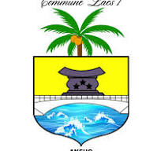

Bienvenue sur Miabé Aného
Découvrez Aného comme jamais auparavant. Notre site est votre guide ultime pour explorer cette ville unique : écoles, restaurants, culture, hébergements, marchés, transports et bien plus encore.
Écoles et Formations
Retrouvez la liste complète des écoles primaires, secondaires et centres de formation professionnelle d’Aného, pour vous ou vos enfants.
Restaurants et Gastronomie
Explorez les saveurs locales et internationales à travers nos sélections de restaurants traditionnels, modernes et rapides.
Culture et Événements
Plongez dans l’histoire et les traditions d’Aného grâce à nos pages dédiées aux musées, festivals et pratiques culturelles locales.
Hébergements et Séjours
Trouvez l’endroit idéal pour votre séjour : hôtels, maisons d’hôtes et appartements confortables adaptés à tous les budgets.
Marchés et Commerces
Parcourez les marchés traditionnels et les commerces locaux pour découvrir les meilleures trouvailles et produits artisanaux.
Transports et Mobilité
Infos pratiques sur les gares routières, taxis, locations de vélos et autres moyens pour vous déplacer facilement dans la ville.
Santé et Pharmacies
Trouvez rapidement les hôpitaux, centres de santé et pharmacies les plus proches pour vos urgences et soins quotidiens.
Sports et Loisirs
Découvrez les centres sportifs, terrains de football, espaces de jeux, et activités de loisirs accessibles à Aného pour tous les âges.
Services Publics
Accédez aux informations sur la mairie, postes, services d’état civil et autres institutions locales utiles à vos démarches administratives.
Ce que disent nos visiteurs
Un site complet qui m'a beaucoup aidé à trouver les meilleures écoles pour mes enfants. Bravo !
J'adore la sélection des restaurants traditionnels, une vraie découverte culinaire !
Les infos sur la culture locale m'ont donné envie de revenir pour le festival annuel.
Actualités et Événements
-
Festival Internationnal d'histoire d'Aného
Le FIHA est un festival pluridisciplinaire initié par la Fondation Aquereburu & Partners, en collaboration avec la commune des Lacs 1, dont Aného est le chef-lieu. La manifestation se déroule en plein cœur de la ville historique, autrefois capitale du Togo à deux reprises (1886‑1897 et 1914‑1919) et inscrite sur la liste indicative du patrimoine mondial de l’UNESCO depuis 2000
-

Lacs1/ Évolution dans Le secteur du bâtiment et des travaux publics (BTP)
AVANCEMENTS DES TRAVAUX PUBLICS DANS LA COMMUNE LACS1 TRAVAUX DE CONSTRUCTION DE QUATRE BLOCS DE LATRINES DE QUATRE CABINES A GAH CONDJI, ABATAME, ZOWLA KPOGUEDE ET AFANVI CONDJI ET DEUX...
-
Agence Nationale pour l'Emploi dans les Lacs1
Le 30 septembre 2024, l’ANPE‑TOGO a inauguré une antenne locale à Aného, située directement dans l’enceinte de la mairie de la commune des Lacs 1 . Ce service public vise à rapprocher les populations des services de l’emploi dans les zones de Vo, Lacs et Bas‑Mono.